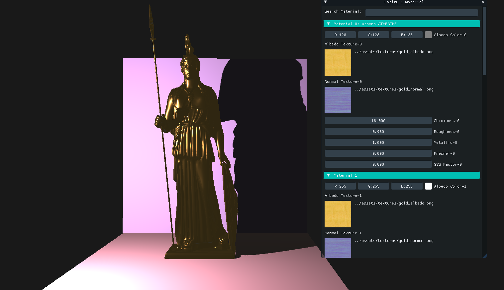

Motor Gráfico Raftel
- rol
- Coautor, motor y render
- stack
- C++ · OpenGL · ImGui · Lua
- equipo
- 2 programadores
Raftel Engine es un motor gráfico en tiempo real desarrollado de forma colaborativa desde cero en C++ moderno y OpenGL. El objetivo fue diseñar un motor docente que replicara funcionalidades y flujos de trabajo propios de entornos AAA actuales, manteniendo una base lo bastante ligera para poder analizarla y ampliarla en el aula.
El render incluye pipelines forward y deferred, sombreado físicamente basado, postprocesado HDR, cascaded shadow maps, screen-space reflections, bloom y tone mapping. Los assets se integran mediante un grafo de materiales y un sistema ECS con soporte para transformaciones jerárquicas e instancing.
El tooling fue una pieza central del proyecto. Un editor basado en ImGui permite ajustar etapas de render en caliente, visualizar información de depuración y usar hooks de profiling. Lua se utiliza para inyectar lógica de gameplay, un JobSystem reparte trabajo pesado entre hilos y una capa ligera de físicas gestiona colisiones y gravedad. Todo ello se documenta mediante una API generada desde el propio código para facilitar que otros alumnos puedan iterar sobre el motor.




créditos
- Autores
- Carlos Mazcuñán, Marc Folgado
consejo: usa ← → para pasar de un proyecto a otro